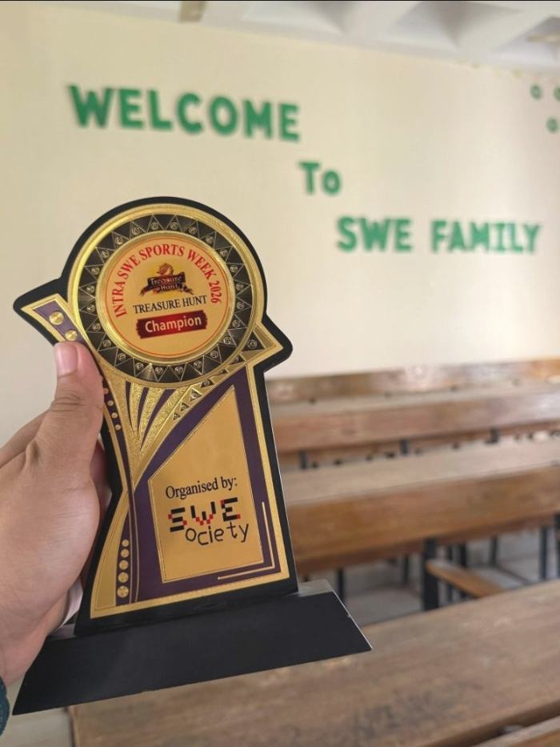
Treasure Hunt — Champion
SWE Sports Week 2026
Team Samia Rahman won the Treasure Hunt out of 17 teams and 50+ contestants. Teammates: Joydip Majumdar and Adib Al Zian.
Software Engineering
Shahjalal University of Science and Technology
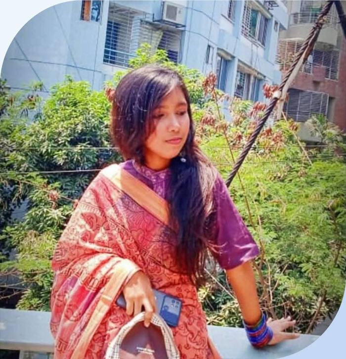
Champion, runners-up and mentions across SWE, robotics and invention competitions.

SWE Sports Week 2026
Team Samia Rahman won the Treasure Hunt out of 17 teams and 50+ contestants. Teammates: Joydip Majumdar and Adib Al Zian.
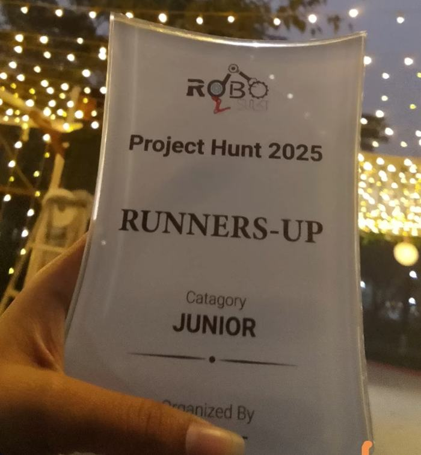
Project Hunt 2025 · RoboSUST
Runners-up trophy in the Junior category at the RoboSUST Project Hunt.
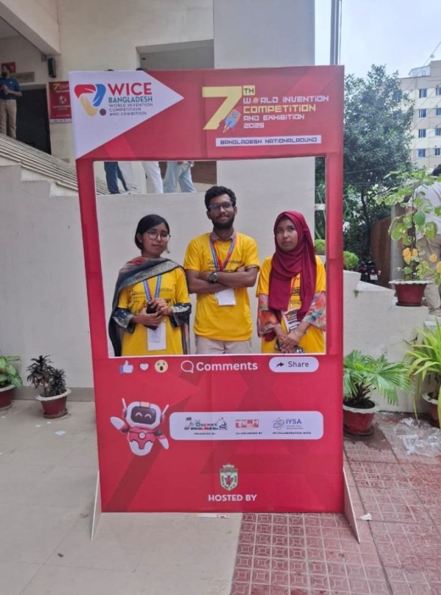
WICE 2025 · Bangladesh National Round
Team BANGLAR MUKH (Samia Rahman, Mashfiqur Rahman, Sanjida Rahman) earned an Honorable Mention at the 7th World Invention Competition and Exhibition.
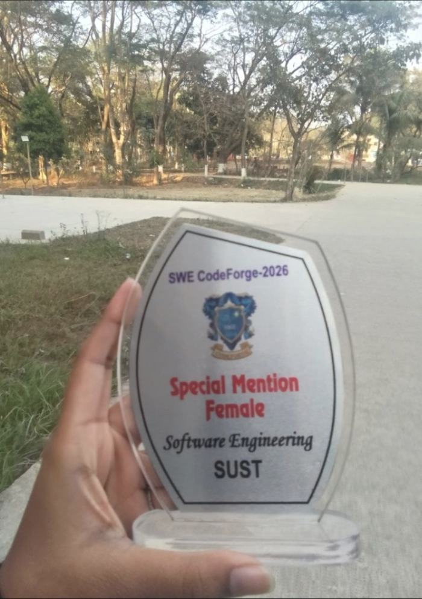
SWE CodeForge 2026
Special Mention at the first programming contest ever held in SWE — only her second contest in university life.
Contest results and projects.
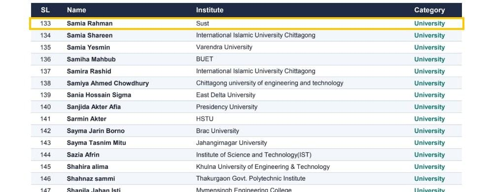
Bangladesh Girls’ Programming Contest 2026 · University category
Ranked 50th in the preliminary round, solving 4 problems (A, D, F, G) with 400 points and 256 penalty. Listed in the official preliminary result. Placed 10th in the mock contest standings (frozen).
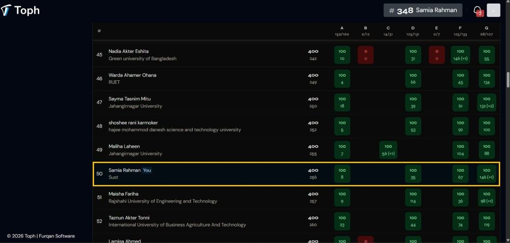
Toph · Final standings
Standings highlighting Samia Rahman (SUST) at rank 50.
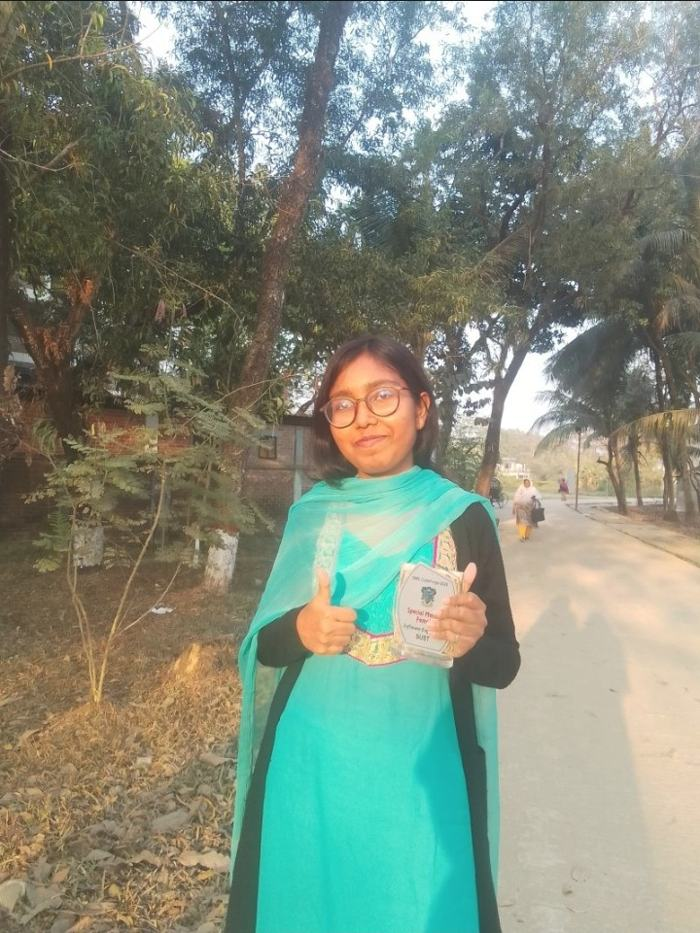
Special Mention (Female)
“Every step forward counts.” Started competitive programming this year, and a Special Mention came out of it.
Embedded systems, sensors and robots.
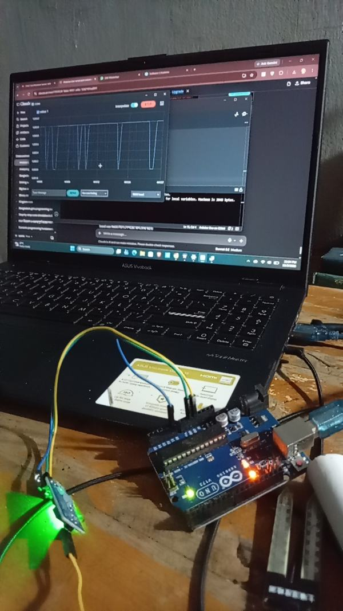
Smart irrigation & greenhouse automation
A low-cost, Arduino Uno–based greenhouse system. Soil moisture and humidity sensors classify the soil as Dry, Moist or Over-watered and send the status to a phone over Bluetooth, while a fan regulates the greenhouse climate.
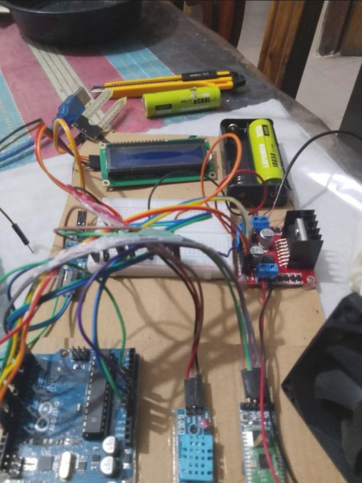
WICE 2025 · Team BANGLAR MUKH
A mobile app giving farmers live sensor data, crop-specific recommendations for temperature, humidity and water levels, and an AI chatbot for farming questions.
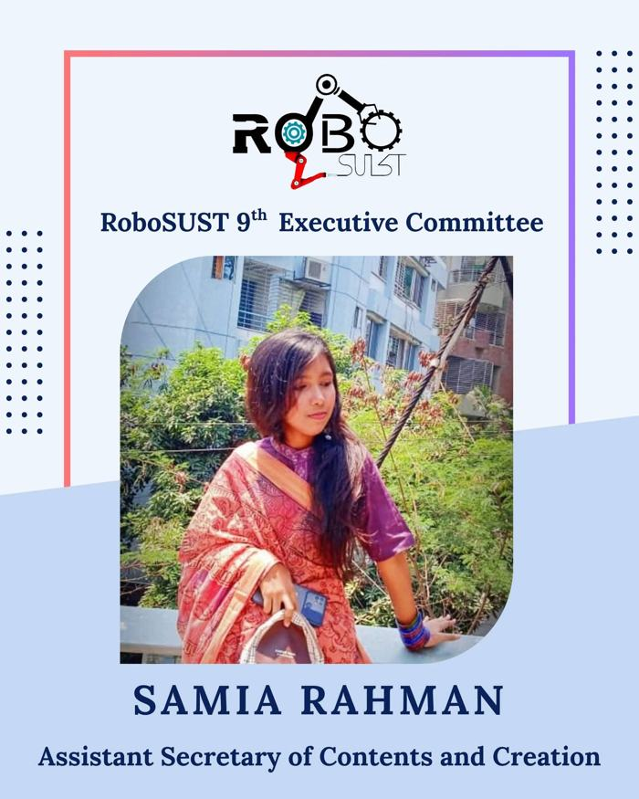
Assistant Secretary of Contents and Creation
Part of the RoboSUST executive committee, SUST’s robotics club.